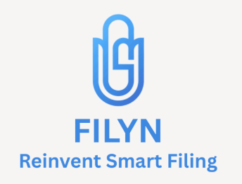

Shipped React control panels used in hypersonic test operations,
shortening operator paths, and adding real time telemetry via
Node.js
Built the facility HMI and live dashboards that visualize hundreds
of ADS variables at high frequency, improving readability
Stabilized the PLC and UI data path with sequence checks and
buffered streams, removing UI desyncs and keeping hardware signals
aligned with on-screen controls

Data Science Summer Intern – Filyn AI
Ingested FDA CTD PDFs into a normalized Postgres model with
section-level metadata, which turned free-form documents into
queryable records for analysis
Designed a CTD-aware schema with text indexes, enabling fast
filterable search by module, section, title, and keywords
Shipped semantic search using embeddings in pgvector, improving
retrieval quality for section lookups
Data Science Intern – Fizz Social Corp
Built a news indexing and ranking pipeline over NewsAPI and Google
News that turned user prompts into traceable, ranked result
Implemented query expansion and similarity search mechanisms,
improving the precision and relevance based on user input
Analyzed and visualized data, providing insights into user
engagement and content relevancy through metrics including NDCG
(84%), MAP (73%), and MRR (83%)